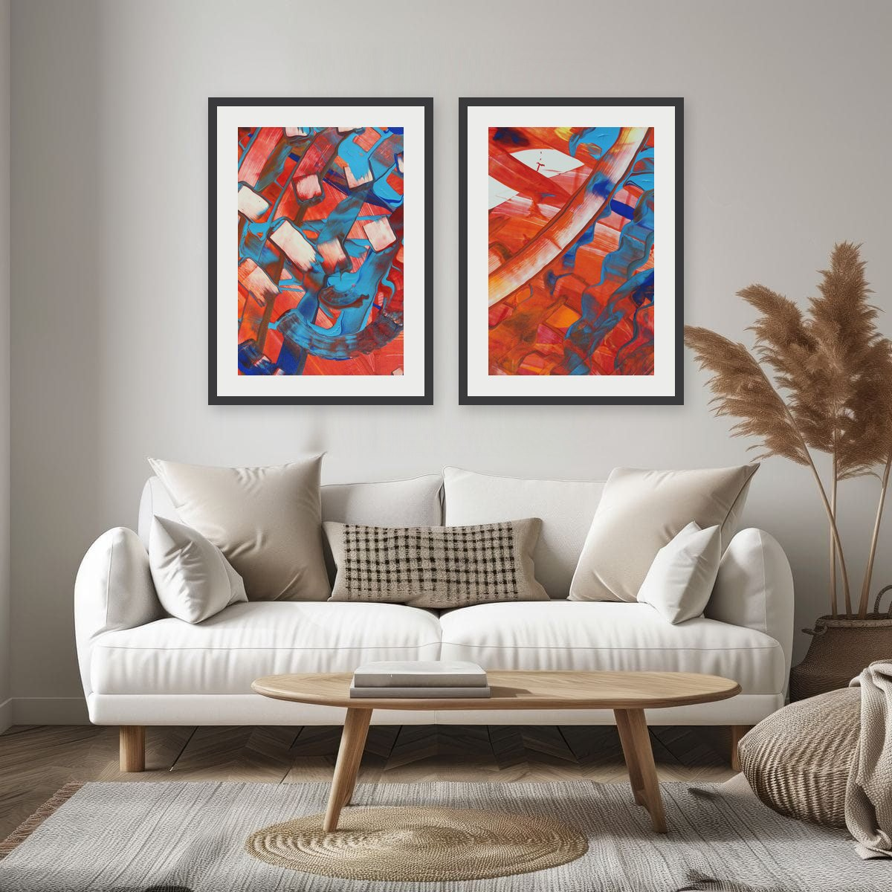
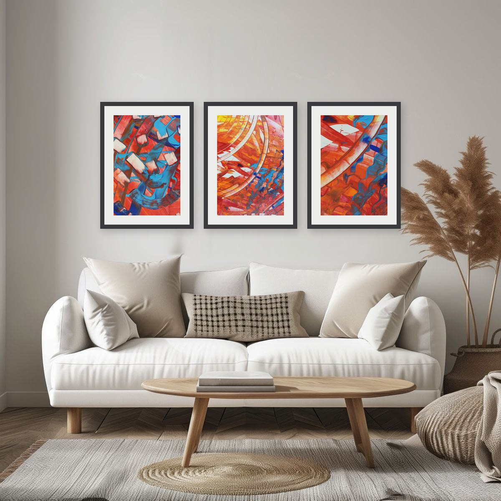
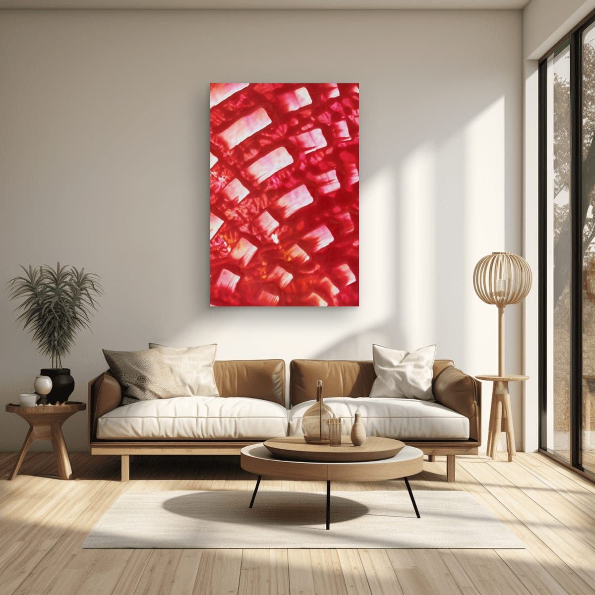

The short answer
Choose art that is about two thirds of the width of your sofa, and hang it so the bottom edge sits 8 to 10 inches (20 to 25 cm) above the back of the sofa. If you are hanging two or three pieces, measure them together as one block, gaps included.
That is the whole rule. The rest of this guide explains why it works, and when it is worth bending it.
Why two thirds works
When you look at a sofa and the wall above it, your eye reads them as one composition. If the art is much narrower than the sofa, it looks like an afterthought, a small island floating on a big wall. If it is as wide as the sofa or wider, the wall starts to feel crowded and the furniture looks undersized.
Somewhere between 60 and 75 percent of the sofa's width, the two start to belong together. The art is clearly connected to the sofa, but there is still breathing room on both sides. I aim for two thirds and adjust from there: a little wider for a low, long sofa in a large room, a little narrower for a compact sofa or a busy wall.
Quick size table
Measure your sofa from arm to arm, then use this as a starting point. The numbers are the total width of the art, frame included.
| Sofa width | Art width (about 2/3) |
|---|---|
| Loveseat, 60″ (152 cm) | 40–45″ (100–115 cm) |
| Standard sofa, 72″ (183 cm) | 48–54″ (120–137 cm) |
| Large sofa, 84″ (213 cm) | 56–63″ (142–160 cm) |
| Extra long sofa, 96″ (244 cm) | 64–72″ (163–183 cm) |
For a sectional, measure only the section that sits against the wall you are decorating, not the whole L.
How high to hang it
The most common mistake I see is art hung too high, closer to the ceiling than to the furniture. It breaks the connection between the sofa and the art, and both end up looking lost.
Above a sofa, the gap between the sofa back and the bottom of the frame matters more than any eye-level rule. Eight to ten inches is close enough to read as one group, and high enough that nobody leaning back will bump the frame. On a wall without furniture, galleries usually place the center of a piece around 57 to 60 inches from the floor. With a sofa in front of the wall, start from the sofa and let the center land where it lands.
If your sofa has a very low back, keep the gap at 8–10 inches and choose a slightly taller piece or arrangement, rather than raising the art to fill the wall.
One horizontal piece, or a group of verticals?
Every print I sell can hang vertically or horizontally, so the choice is really about the look you want, not about what is available. There are three classic ways to fill that two-thirds width.
One large horizontal piece
The calmest option. One strong image, one frame, one focal point. It suits minimal rooms and long, low sofas, and it is the easiest to hang: one nail, one level line. Turning a detail on its side also changes how it reads. A diagonal stroke that climbs in the vertical version suddenly sweeps across the wall like a wave.
A pair of vertical prints
Two vertical pieces side by side give you the same width with more rhythm. This is my favorite option with painting details, because two close-ups from the same painting share the same colors and the same energy, but each one shows a different part of the surface. They look related without looking identical.

Three vertical prints in a row
Three pieces read as a series. It works especially well above long sofas and sectionals, where a single piece would have to be very large. Keep all three the same size and the same frame, line up the top and bottom edges, and keep the gaps identical. A trio only works when it looks deliberate.

Spacing a pair or a trio
- Gap between frames: 2 to 3 inches (5 to 8 cm). Wider than that and the pieces stop reading as a group.
- Total width: all frames plus all gaps should come to about two thirds of the sofa, up to three quarters for a trio.
- Center the group on the sofa, not on the wall, if the sofa is not centered on the wall.
- Same frames, same sizes. Mixing sizes is possible, but it is a gallery-wall look and needs a different plan.
Choosing the colors
Size gets the proportions right, color makes the wall feel finished. A simple approach that rarely fails: pick one color that is already in the room, in a cushion, a rug or a plant pot, and look for art where that color is an accent rather than the main field. In the photos above, the room is all neutrals, so the red and turquoise carry the wall on their own. Add one turquoise cushion to the sofa and the art and the room suddenly feel planned together.
Light walls and neutral sofas can take strong color. If your sofa is already bold, a calmer piece with one shared accent usually looks better than art that competes with it.

Mistakes I see most often
- Art that is too small. The most common one by far. When in doubt, go one size up.
- Hanging too high. Keep the 8–10 inch gap and the art will belong to the sofa.
- Ignoring the sofa's position. Center the art on the furniture, not on the wall.
- Uneven gaps in a group. A quarter inch of difference is visible from across the room. Measure twice.
- Matching the sofa color exactly. Art that repeats the sofa color disappears. Contrast or one shared accent works better.
Try it before you drill
Cut sheets of paper or cardboard to the size of the frames you are considering and tape them to the wall with painter's tape. Live with them for a day. It is the fastest way to see whether a size feels right, and it shows you exactly where the nails go.
Checklist
- Measure the sofa from arm to arm.
- Multiply by 2/3. That is your total art width.
- Decide: one horizontal piece, a pair, or three verticals.
- For groups, plan 2–3″ gaps and include them in the total width.
- Hang the bottom edge 8–10″ above the sofa back, centered on the sofa.
- Test with paper templates first.
These are general guidelines, not strict rules. Every room is different, and a few inches either way will not ruin a good wall. Room scenes are digital mockups; the artworks are details of real hand-painted paintings. Prints are offered in several sizes and formats on the shops linked from each artwork page.